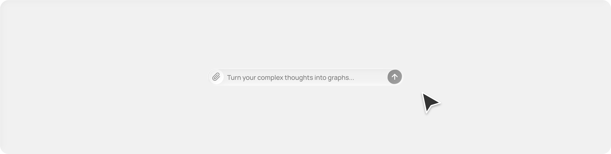
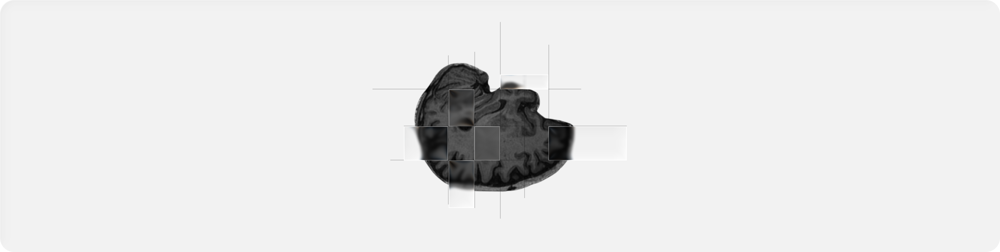
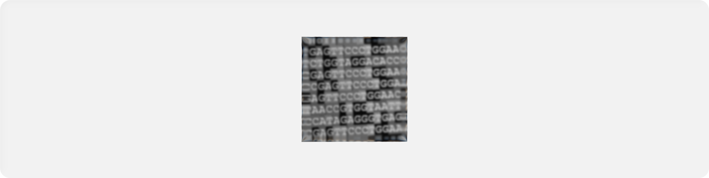
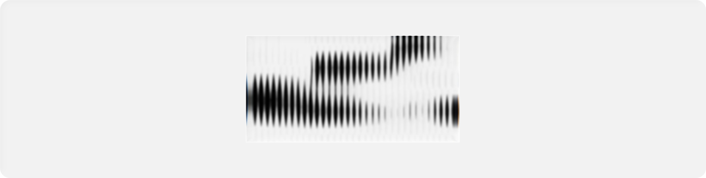
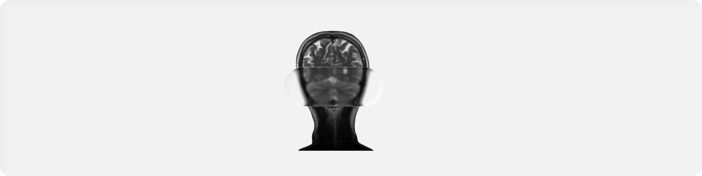

It's time to rethink how we help patients
Reteena is a product development lab focused on creating human-friendly
solutions that enable more accessible Alzheimer's diagnosis and therapy
Remembrance
Learn More

Remembrance is an emotionally intelligent, context-aware LLM-based memory assistant for Alzheimer's patients, featuring a user interface similar to Obsidian. It delivers reminiscence therapy in a non-intrusive and natural manner while preserving core memories by extracting data from conversations using the LLM
Low Field MRI Framework
Learn More

Clarity is a deep learning framework to enhance low-field MRI scans for segmenting brain regions linked to Alzheimer's Disease and achieved 96% accuracy in automatic AD diagnosis using volumetric data and ensemble ML models. This approach offers a cost-effective, faster alternative to traditional MRI for early AD detection.
GeneAttentionNet
Learn More

GeneAttentionNet is designed to classify Alzheimer’s disease using high-dimensional gene expression data. Unlike traditional models that treat genes as isolated features, GeneAttentionNet uses attention mechanisms to uncover meaningful relationships between genes, mimicking how biological systems interact. GeneAttentionNet outperformed standard multilayer perceptrons by nearly 8% and Random Forests by 38%.
04
05
SALSA
Learn More

Simple Adapter-based Low-compute Speech Analysis for Alzheimer's Across Corpora (SALSA) is a lightweight framework for detecting Alzheimer's disease from spontaneous speech while maintaining strong generalization across datasets and microphones. Rather than retraining large models, SALSA freezes a pre-trained self-supervised speech encoder and adds small LoRA adapters to capture task-specific details. It combines acoustic embeddings with lexical cues from automatic transcripts and uses Group Distributionally Robust Optimization (GroupDRO) to address variations across datasets. Designed to run efficiently on a single consumer GPU or CPU, SALSA demonstrates strong cross-corpus generalization on benchmarks such as ADReSS 2020
NeuroMorphLite-fMRI
Learn More

NeuroMorphLite-fMRI is a lightweight framework that merges deep learning and reinforcement learning to enhance fMRI-based Alzheimer's research. Built on datasets such as ADNI and OASIS, it uses CNN and Transformer backbones for high-fidelity brain reconstruction while keeping computational demands low. A reinforcement agent tunes regularization and identifies regions of interest, like the hippocampus and cortex, to optimize both image clarity and diagnostic accuracy. NeuroMorphLite-fMRI enables efficient, interpretable neuroimaging analysis that brings precision modeling within reach of research environments